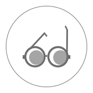

空气质量查询
126
位置更换
磁器口
36
优
海淀黄庄
123
轻度污染
南锣鼓巷
163
中度污染
颐和园
265
重度污染
污染物
59
PM2.5
良
μg/m
3
53
PM10
良
μg/m
3
28
O
3
良
μg/m
3
36
NO
2
良
μg/m
3
1000
CO
良
μg/m
3
2
SO
2
良
μg/m
3
生活指数
晨练指数
适宜
穿衣指数
炎热
防晒指数
较弱
交通指数
适宜
路况指数
炎热
洗车指数
较弱
约会指数
适宜

紫外线指数
炎热
旅游指数
较弱
 空气质量查询
空气质量查询
空气质量查询
空气质量查询
空气质量查询
空气质量查询